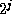
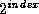
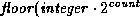

Common Lisp the Language, 2nd Edition
The logical operations in this section require integers as arguments; it is an error to supply a non-integer as an argument. The functions all treat integers as if they were represented in two's-complement notation.
The logical operations provide a convenient way to represent an infinite vector of bits. Let such a conceptual vector be indexed by the non-negative integers. Then bit j is assigned a ``weight'' . Assume that only a finite number of bits are 1's or only a finite number of bits are 0's. A vector with only a finite number of one-bits is represented as the sum of the weights of the one-bits, a positive integer. A vector with only a finite number of zero-bits is represented as -1 minus the sum of the weights of the zero-bits, a negative integer.
This method of using integers to represent bit-vectors can in turn be used to represent sets. Suppose that some (possibly countably infinite) universe of discourse for sets is mapped into the non-negative integers. Then a set can be represented as a bit vector; an element is in the set if the bit whose index corresponds to that element is a one-bit. In this way all finite sets can be represented (by positive integers), as well as all sets whose complements are finite (by negative integers). The functions logior, logand, and logxor defined below then compute the union, intersection, and symmetric difference operations on sets represented in this way.
[Function]
logior &rest integers
This returns the bit-wise logical inclusive or of its arguments. If no argument is given, then the result is zero, which is an identity for this operation.
[Function]
logxor &rest integers
This returns the bit-wise logical exclusive or of its arguments. If no argument is given, then the result is zero, which is an identity for this operation.
[Function]
logand &rest integers
This returns the bit-wise logical and of its arguments. If no argument is given, then the result is -1, which is an identity for this operation.
[Function]
logeqv &rest integers
This returns the bit-wise logical equivalence (also known as exclusive nor) of its arguments. If no argument is given, then the result is -1, which is an identity for this operation.
[Function]
lognand integer1 integer2
lognor integer1 integer2
logandc1 integer1 integer2
logandc2 integer1 integer2
logorc1 integer1 integer2
logorc2 integer1 integer2
These are the other six non-trivial bit-wise logical operations on two arguments. Because they are not associative, they take exactly two arguments rather than any non-negative number of arguments.
(lognand n1 n2) == (lognot (logand n1 n2)) (lognor n1 n2) == (lognot (logior n1 n2)) (logandc1 n1 n2) == (logand (lognot n1) n2) (logandc2 n1 n2) == (logand n1 (lognot n2)) (logorc1 n1 n2) == (logior (lognot n1) n2) (logorc2 n1 n2) == (logior n1 (lognot n2))
The ten bit-wise logical operations on two integers are summarized in the following table:
---------------------------------------------------------------- integer1 0 0 1 1 integer2 0 1 0 1 Operation Name ---------------------------------------------------------------- logand 0 0 0 1 and logior 0 1 1 1 inclusive or logxor 0 1 1 0 exclusive or logeqv 1 0 0 1 equivalence (exclusive nor) lognand 1 1 1 0 not-and lognor 1 0 0 0 not-or logandc1 0 1 0 0 and complement of integer1 with integer2 logandc2 0 0 1 0 and integer1 with complement of integer2 logorc1 1 1 0 1 or complement of integer1 with integer2 logorc2 1 0 1 1 or integer1 with complement of integer2
[Function]
boole op integer1 integer2
[Constant]
boole-clr
boole-set
boole-1
boole-2
boole-c1
boole-c2
boole-and
boole-ior
boole-xor
boole-eqv
boole-nand
boole-nor
boole-andc1
boole-andc2
boole-orc1
boole-orc2
The function boole takes an operation op and two integers, and returns an integer produced by performing the logical operation specified by op on the two integers. The precise values of the sixteen constants are implementation-dependent, but they are suitable for use as the first argument to boole:
---------------------------------------------------------------- integer1 0 0 1 1 integer2 0 1 0 1 Operation Performed ---------------------------------------------------------------- boole-clr 0 0 0 0 always 0 boole-set 1 1 1 1 always 1 boole-1 0 0 1 1 integer1 boole-2 0 1 0 1 integer2 boole-c1 1 1 0 0 complement of integer1 boole-c2 1 0 1 0 complement of integer2 boole-and 0 0 0 1 and boole-ior 0 1 1 1 inclusive or boole-xor 0 1 1 0 exclusive or boole-eqv 1 0 0 1 equivalence (exclusive nor) boole-nand 1 1 1 0 not-and boole-nor 1 0 0 0 not-or boole-andc1 0 1 0 0 and complement of integer1 with integer2 boole-andc2 0 0 1 0 and integer1 with complement of integer2 boole-orc1 1 1 0 1 or complement of integer1 with integer2 boole-orc2 1 0 1 1 or integer1 with complement of integer2
boole can therefore compute all sixteen logical functions on two arguments. In general,
(boole boole-and x y) == (logand x y)
and the latter is more perspicuous. However, boole is useful when it is necessary to parameterize a procedure so that it can use one of several logical operations.
[Function]
lognot integer
This returns the bit-wise logical not of its argument. Every bit of the result is the complement of the corresponding bit in the argument.
(logbitp j (lognot x)) == (not (logbitp j x))
[Function]
logtest integer1 integer2
logtest is a predicate that is true if any of the bits designated by the 1's in integer1 are 1's in integer2.
(logtest x y) == (not (zerop (logand x y)))
[Function]
logbitp index integer
logbitp is true if the bit in integer whose index is index (that is, its weight is ) is a one-bit; otherwise it is false. For example:
(logbitp 2 6) is true (logbitp 0 6) is false (logbitp k n) == (ldb-test (byte 1 k) n)

X3J13 voted in January 1989
(ARGUMENTS-UNDERSPECIFIED)
to clarify that the index must be a non-negative integer.

[Function]
ash integer count
This function shifts integer arithmetically left by count bit positions if count is positive, or right by -count bit positions if count is negative. The sign of the result is always the same as the sign of integer.
Mathematically speaking, this operation performs the computation ).
Logically, this moves all of the bits in integer to the left, adding zero-bits at the bottom, or moves them to the right, discarding bits. (In this context the question of what gets shifted in on the left is irrelevant; integers, viewed as strings of bits, are ``half-infinite,'' that is, conceptually extend infinitely far to the left.) For example:
(logbitp j (ash n k)) == (and (>= j k) (logbitp (- j k) n))
[Function]
logcount integer
The number of bits in integer is determined and returned. If integer is positive, the 1-bits in its binary representation are counted. If integer is negative, the 0-bits in its two's-complement binary representation are counted. The result is always a non-negative integer. For example:
(logcount 13) => 3 ;Binary representation is ...0001101 (logcount -13) => 2 ;Binary representation is ...1110011 (logcount 30) => 4 ;Binary representation is ...0011110 (logcount -30) => 4 ;Binary representation is ...1100010
The following identity always holds:
(logcount x) == (logcount (- (+ x 1)))
== (logcount (lognot x))
[Function]
integer-length integer
This function performs the computation
This is useful in two different ways. First, if integer is non-negative, then its value can be represented in unsigned binary form in a field whose width in bits is no smaller than (integer-length integer). Second, regardless of the sign of integer, its value can be represented in signed binary two's-complement form in a field whose width in bits is no smaller than (+ (integer-length integer) 1). For example:
(integer-length 0) => 0 (integer-length 1) => 1 (integer-length 3) => 2 (integer-length 4) => 3 (integer-length 7) => 3 (integer-length -1) => 0 (integer-length -4) => 2 (integer-length -7) => 3 (integer-length -8) => 3
(haulong x) == (integer-length (abs x))